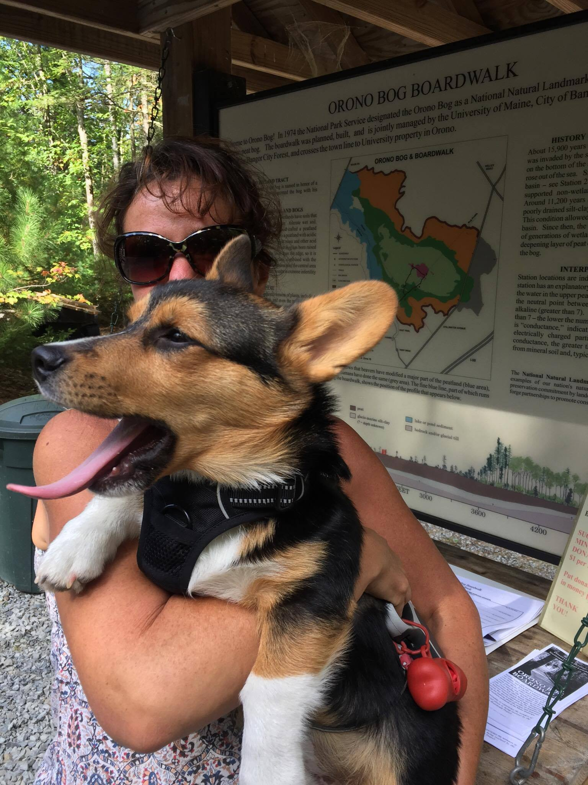

I got to visit with the bear on campus at UMaine and I received many pats from students. Although in the picture I'm sitting very still, seconds after this picture was taken, I ran away because I was afraid of the bear.
We also went on an adventure to the Bog Walk. We only found out once we got to the Bog that I was not allowed to go. So we walked around the forest instead. I still got a picture in front of the Bog sign though. I'm obviously yawning in this picture because I'm tired from walking less than a mile.
I got to visit Stephen King's house on his 70th Birthday. If you can't tell from the pictures, I obviously wasn't impressed. There were balloons everywhere and I'm very afraid of balloons. I was hoping to meet his corgi, The Thing of Evil, but I didn't.